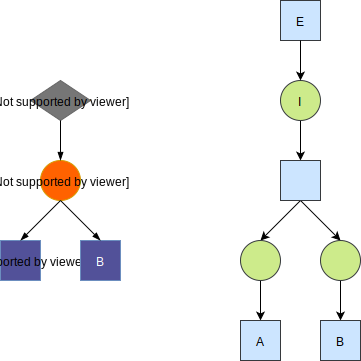
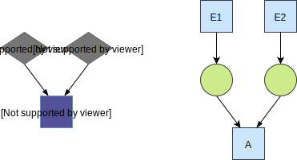
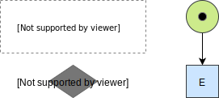

Execution Semantics
Execution loop
This is a short description of the execution loop of a RecipeInstance
- An
EventInstanceis fired and provides ingredients, either given to baker as a sensory event or as an output of anInteractionInstance. - Baker tries to match the currently available provided
IngredientInstanceswith the input of awaitingInteractionInstances. InteractionInstancesthat can be called, execute and when complete they fire moreEventInstances, repeating the loop from step 1.- This continues until there are no more
InteractionInstancesto execute, and the process is considered complete.
Notes
- A sensory event may be provided 1 or more times depending on its
firing limit. - When
IngredientInstancesare provided multiple times, the latest value overrides the previous. - An
InteractionInstancefires when all it'sIngredientInstancesand requiredEventsare provided. This may happen 1 or more times depending on themaximum interaction count.
In depth
This section explains deeply how ProcessInstances work, and how they execute your recipes. You don't have to understand
this part to develop with Baker. It is just extra documentation for the curious and the contributors.
A recipe can be represented (and visualized) as a graph, which is actually a higher
level representation of a Petri net (which is also a graph). When the process
is represented as such it enables the RecipeInstance to execute the previously described execution loop, because Baker has
your process state as a data structure that can be preserved as the state of the RecipeInstance. That is why you need
to first use the RecipeCompiler and compile the recipe into a CompiledRecipe (petri net representation) before
running a RecipeInstance from it.
Translation rules
The compiler has some rules about translating recipe parts to transitions and places in the petri net.
Ingredient used by multiple interactions
Often an ingredient will be used by multiple interactions in a recipe.
Because tokens can only be consumed by one transition we have to add a layer to duplicate the token for all transitions.

Interaction with precondition (AND)
By default event preconditions use an AND combinator. In the petri net this means that each event transition has to produce a token in a place for that interaction.

Interaction with precondition (OR)
Events that are grouped in an OR combinator for an interaction output a token to the same place.
Therefor when one of them fires the condition for the transition to fire is met.

Sensory event with firing limit
When specifying a sensory event with a firing limit of n we generate an in-adjacent place with n tokens in the
initial marking.
